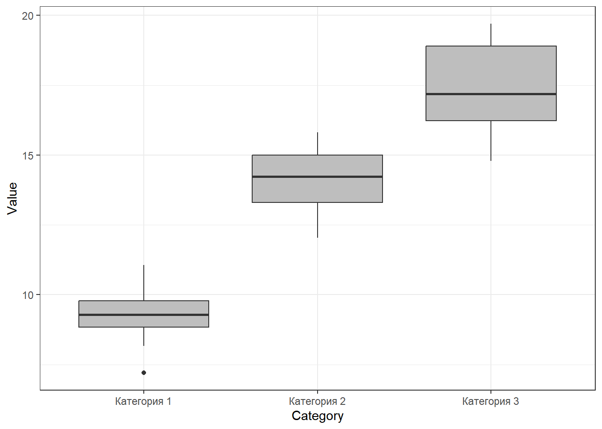

Презентации и данные
Внимание! Распределение тем по датам занятий очень условное. Возможно, что все переиграется по мере развития событий.
1. Знакомство с R
- Презентация: 01_intro_to_r.html
- Код для работы на лекции: 01_intro to R_student_script.R
- Данные для работы на лекции: hydrology_2022.xls
2. Данные и их визуализация с использованием пакета
ggplot2
Код для работы на лекции: 02_intro_ggplot.R
Презентация: Опрятные данные и основы визуализации данных с помощью пакета ggplot2
Домашнее задание №1
Первая часть ДЗ
Ваша миссия: Скачайте данные по водному тесту за 2022 или 2023 гг. В этом файле найдите лист “Север”. Переделайте данные этого листа так, чтобы из него получилось два датасета: один по описанию параметров гнезд (ID гнезда, Дата, Место, Число яиц, Срок насиживания, Начало насиживания, Вылупление), второй по водному тесту (ID гнезда, У1, У2, У3, Д1, Д2, Д3). Но! оба датасета необходимо представить в длинном формате с соблюдением правил tidy data.
Внимание! Второй датсет совсем не прост, подумайте какие перменные там должны быть.
Оба датасета необходимо сохранить в формате csv.
Результаты (два csv файла) необходимо выслать до 23:59 четверга 21 марта.
Вторая часть ДЗ
Ваша миссия: Используйте переведенные в длинный формат данные по водному тесту, полученные на предыдущем шаге ДЗ. У вас должно быть два файла: nest.csv и eggs.csv.
Вот приблизительный вид того, как должны выглдеть эти файлы, если их открыть в Экселе (или в чем-то еще, типа LibreOffice).
{kind=link}
{kind=link}
Важно! Электронные таблицы (с российскими настройками) в файлах csv в качестве разделителя обычно используют не запятую, а точку с запятой. Посмотрите на свои csv файлы через блокнот и выясните, какой разделител у вас.
Скопируйте к себе в RStudio код приведенный ниже. Пройдите его, подумайте, что осуществляется в этом коде.
library(dplyr)
nest <- read.table("data/nest.csv", sep = ";", header = TRUE, encoding = "utf8")
eggs <- read.table("data/eggs.csv", sep = ";", header = TRUE, encoding = "utf8")
eggs_angle <-
eggs %>%
filter(Parameter_Type == "Angle") %>%
filter(Value != "взв")
eggs_angle$Value <- as.numeric(eggs_angle$Value)
eggs_angle_mean <-
eggs_angle %>%
group_by(ID) %>%
summarise(Mean_Angle = mean(Value))
eggs_angle_mean_nest <- merge(eggs_angle_mean, by = "ID", nest) # Функция merge(), позволяет
# объединить два датасета, у которых есть общая переменнаяДалее, используя датасет eggs_angle_mean_nest постройте
вот такой график
В качестве ответа необходимо прислать код, который будет включать все этапы построения графика (включая подготовку данных)
Домашнее задание №2
Первая часть ДЗ
Откройте датасет iris. Это данные по измерению размеров
нескольких частей цветка у трех видов ирисов: setosa, versicolor,
virginica.

Строение цветка ириса
Каждый должен взять себе (отфильтровать) только одну часть данных.
- Вариант 1. Работает с видом “setosa”.
- Вариант 2. Работает с видом “versicolor”.
- Вариант 3 Работает с видом “virginica”.
Всем нужно будет (пользуясь любыми методами, хоть на бумажке)
посчитать сколько раз в полученном датасете встретилось каждое из
значений в переменной iris$Sepal.Length. После подсчета
необходимо создать датафрейм, в котором в первой колонке будут стоять
значения переменной iris$Sepal.Length, а во второй колонке
будет указано сколько раз встретилось данное значение. Если подсчеты
делали не с помощью R-кода, а на листочке, то результаты надо будет
набить в экселе.
Для примера, решение аналогичного задания, для вида “setosa” по
переменной iris$Sepal.Width будет выглядеть вот так.
Sepal.Width | Frequency |
|---|---|
2.3 | 1 |
2.9 | 1 |
3 | 6 |
3.1 | 4 |
3.2 | 5 |
3.3 | 2 |
3.4 | 9 |
3.5 | 6 |
3.6 | 3 |
3.7 | 3 |
3.8 | 4 |
3.9 | 2 |
4 | 1 |
4.1 | 1 |
4.2 | 1 |
4.4 | 1 |
Полученный датасет необходимо сохранить в формате .csv.
Вторая часть ДЗ
Используя полученный датасет, необходимо построить вот такой график (с соблюдением цветов и заливок) .
Дедлайн, как всегда, 23:59 дня перед следующим занятием.
3. Описательная статистика
Домашнее задание
Часть 1.
Ваша миссия: Напишите код, который будет выводить следущие значения для тех переменных, которые даны ниже (в каждом варианте будет свой набор данных).
- медиана
- 1-й и 3-й квартили (без медианы)
- Одновременно минимум,максимум, 1-й, медиану и 3-й квартили
В каждом датасете есть несколько категорий, для каждой из них надо вывести указанные выше описательные статистики (например, для каждого вида нужно дать отдельные характеристики).
Датасеты:
Вариант 1. Переменная
Petal.Lengthдля каждого из видов из датасетаirisВариант 2. Вес цыплят
weightна 21-й день наблюдения (переменнаяTime) для каждого из четырех типов диет (Diet) из датасетаChickWeight.Вариант 3. Расход топлива
mpgу автомобилей с разным количеством цилиндров (переменнаяcyl) из датасетаmtcars. Важно! переменнуюcylнеобходимо сделать фактором (используйте функцию as.factor()).
Часть 2.
Для своего датасета необходимо построить картинку подобную вот этой

4. Модель нрмального распределения, как основа для тестирования статистических гипотез
Презентация о свойствах нормального распределения
Презентация о точечных и интервальных оценках параметров нормального распределения
Домашнее задание
Часть 1.
Скачайте датасет, соответствующий вашему варианту. Это датафрейм, состоящий из пяти переменных. Найдите, какие из переменных подчиняются нормальному распределению. Ваш анализ должен быть отражен в скрипте. Ответ о том, подчиняется ли та или иная переменная нормальному распределению, приведите в виде комментария в скрипте. В этом же комментарии постарайтесь оценить, что именно не соотвествует модели нормального распределения.
Вариант 1. Датасет для варианта 1
Вариант 2. Датасет для варианта 2
Вариант 3. Датасет для варианта 3
Часть 2.
Используя датасеты из предыдущего задания (там, где мы строили боксплоты), вычислите выборочные средние и среднеквадратичные отклонения для каждой из групп категорий, которые представлены в этих датасетах.
Вариант 1. Переменная
Petal.Lengthдля каждого из видов из датасетаirisВариант 2. Вес цыплят
weightна 21-й день наблюдения (переменнаяTime) для каждого из четырех типов диет (Diet) из датасетаChickWeight.Вариант 3. Расход топлива
mpgу автомобилей с разным количеством цилиндров (переменнаяcyl) из датасетаmtcars. Важно! переменнуюcylнеобходимо сделать фактором (используйте функцию as.factor()).
Часть 3.
Используя датасеты Части 2 (для своего варианта), определите границы 95% доверительного интервала для каждой из категорий.
Доверительный интервал вычислется как \(\bar{x} \pm t\cdot SE\)
Величину \(t\) (это 2.5% или 97.5% квантили t-распределиния Стьюдента) пока определяем по таблице.
В этой таблице: \(df = n - 1\), где \(n\) - объем выборки. Берем столбец для p = 0.05 (доверительная вероятность: P = 1 - p = 0.95). Зная \(n\), находим величину t.
Кроме того, вам нужно вычислить величину стандартной ошибки, которая вычисляется по следующей формуле:
\[ SE = \frac{Sd}{\sqrt{n}} \]
\(Sd\) - стандартное отклонение.
4. Тестирования статистических гипотез с помощью t-критерия Стьюдента
Домашнее задание
Размерная струкутра эльфов
Раз уж у нас на лекции появилась тема с мирами Дж.Р.Р.Толкиена, то вот вам ДЗ про это. Представьте себе, что вы идете по лесам Средиземья с отрядом эльфов. Все участники похода были независимо и случайно отобраны из числа этого народа. И вдруг, вдалеке, вы заметили отряд неких существ. Вам необходимо принять решение о том, свои это или чужие. Вы (с помощью магии, наверное) смогли как-то измерить рост фигур из этого отряда. Сделайте обоснованный вывод на основе данных, которые у вас имеются. Результаты необходимо описать в виде текста (комментарии в скрипте с решением, в котором надо сформулировать нулевую и альтернативную гипотезы и сделать выбор между ними) и визуализировать в виде столбчатой диаграммы (необходимо написать код, который ее построит).
Вариант 1.
Рост эльфов из вашего отряда (см): 183, 173, 184, 186, 176, 169, 178, 181, 189, 180, 183, 177, 178, 170, 177
Рост фигур (см): 165, 166, 160, 162, 162, 161, 166, 169, 163, 163, 157, 168, 171, 169, 164, 179, 157, 152, 173, 165
Вариант 2.
Рост эльфов из вашего отряда (см): 174, 179, 184, 184, 183, 179, 165, 179, 173, 190, 182, 182, 183, 183, 187
Рост фигур (см): 188, 196, 183, 202, 198, 200, 194, 197, 196, 188, 176, 191
Вариант 3.
Рост эльфов из вашего отряда (см): 166, 172, 177, 177, 184, 185, 168, 180, 172, 175, 176, 183, 176, 182, 182
Рост фигур (см): 145, 146, 141, 145, 152, 144, 153
5. Однофакторный дисперсионный анализ
Домашнее задание
Скачайте файл, в котором находятся данные по метеорологическим
наблюдениям на территории Кандалакшского заповедника. Файл поместите в
папку Data (ну или как она у вас называется)
Ваша миссия
Необходимо выяснить наблюдаются ли различия между тремя летними месяцами (нужно будет провести дисперсионный анализ) в том параметре, котоый будет у вашего варианта.
Проведите анализ остатков и оцените, выполняются ли условия применимости ANOVA.
Визуализируйте с помощью столбчатой диаграммы (с доверительными интервалами) средние значения. Проведя post-hoc сравнение средних, обозначьте на рисунке те средние, которые отличаются друг от друга по критерию Тьюки.
Результаты ваших действий с соответствующими текстовыми комментариями должны быть оформлены в виде html-файла (именно его и надо прислать!), который вы сгенерируете из RMD файла. При этом, код из чанков должен быть виден в итоговом html-файле (в настроечном чанке оставьте
echo = TRUE).
Варианты:
Вариант 1. Анализ солености (переменная S)
Вариант 2. Анализ температуры воздуха (переменная Air_T)
Вариант 3. Анализ температуры воды (переменная Water_T)
Дальнейшие планы корректируются…
Оценки за домашние работы
| Name | HW1 | HW2 | HW3 | HW4 | HW5 | HW6 | HW7 |
|---|---|---|---|---|---|---|---|
| Феликс | 150 | 0 | 50 | 100 | 100 | 100 | 100 |
| Вероника | 150 | 0 | 100 | 100 | 100 | 100 | 100 |
| Мария | 150 | 50 | 100 | 100 | 100 | 100 | 100 |